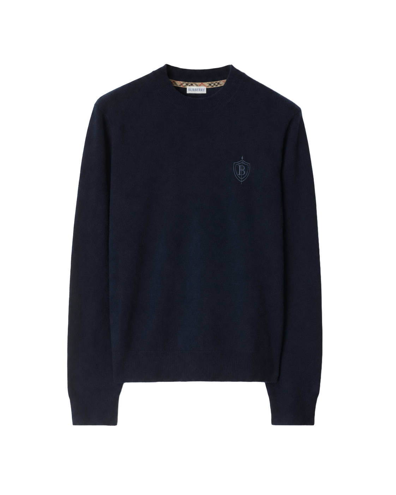

Brand Design · PET
Burberry.
Erfgoed, opnieuw in balans.
Een persoonlijke rebrandstudie: hoe kan een herkenbaar luxemerk rustiger en moderner aanvoelen zonder zijn Britse karakter te verliezen?


Het project
Geen nieuw merk. Een scherpere selectie.
Voor dit persoonlijke PET-project onderzocht ik hoe Burberry's bekende merkcodes met meer terughoudendheid kunnen worden ingezet. De trenchcoat, de check en de historische ruiter vormden het vertrekpunt. Mijn rol was Brand Designer, van onderzoek en logo-exploratie tot de uitwerking op kleding.
- Context
- Persoonlijk PET-project · conceptuele rebrand
- Rol
- Brand Designer
- Aanpak
- Merkonderzoek, schetsen, logo en kledingtoepassingen
De richting
Wat blijft herkenbaar als je de ruis wegneemt?
De studie vertrekt vanuit quiet luxury met archieferfgoed. Minder visuele drukte, meer aandacht voor typografie en ruimte, en historische verwijzingen die als detail werken in plaats van als decoratie.
01 / Exploratie
Eerst zoeken op papier.
In de eerste schetsen onderzocht ik varianten op de B, het schild en de historische ruiter. Die verkenning hielp om een compact symbool te kiezen dat op een kledingstuk ook in klein formaat zichtbaar kan blijven.

02 / Identiteit
Een schild als stille verwijzing.
Het uitgewerkte symbool combineert een B met een schild en een verticale lijn. Zo blijft de verwijzing naar bescherming en vooruitgang aanwezig, zonder de volledige historische illustratie over te nemen. Een serif woordmerk zorgt voor de editorial tegenhanger.

Ivoor en zwart dragen de identiteit; beige verwijst subtiel naar de trenchcoat.
03 / Toepassingen
Het ontwerp op kleding.
De toepassingen laten twee schaalniveaus zien: een zichtbaar woordmerk met symbool op de zwarte trui en een terughoudender merkteken als detail op de trenchcoat en de donkerblauwe sweater. Het zijn conceptuele mockups, geen geproduceerde kledingstukken.

Reflectie
De kracht zit in wat je weglaat.
Dit project liet me werken met bestaande merkcodes in plaats van vanaf nul te beginnen. De schetsen, het symbool en de kledingmockups tonen de gekozen richting. Andere dragers zoals verpakking of een website zijn ideeën in de projecttekst, maar maken geen deel uit van deze uitgewerkte selectie.